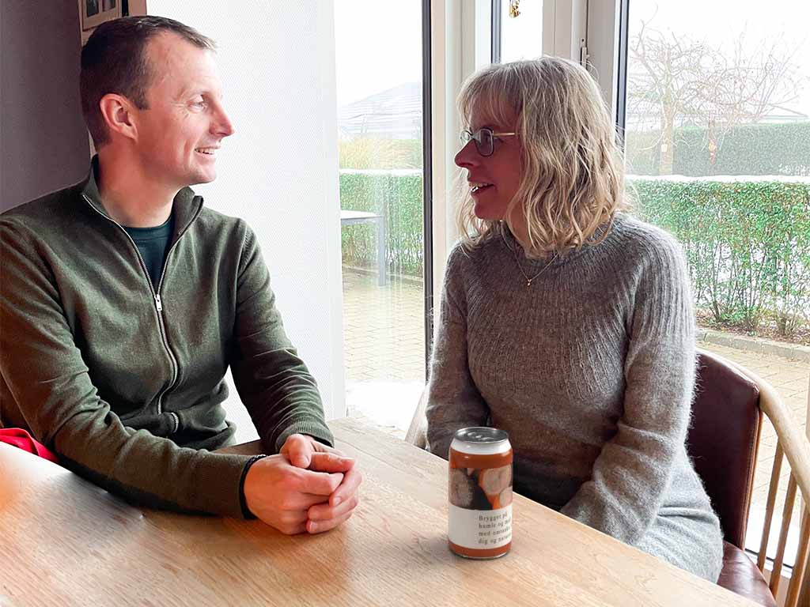

Hvorfor alkoholfri øl?
Alkohol og samvær
Alkohol har længe været symbol på socialt samvær. Fra familiemiddage og julefrokoster til sammenkomster efter arbejde, er det ofte det gyldne bryg som er fællesnævner for det sociale. Desværre er alkoholen ikke kun bindeled mellem mennesker til begivenheder, den kan også medføre at de, der ikke ønsker alkohol,kan føle sig ekskluderet fra fællesskabet. Her kommer den alkoholfrie øl ind i billedet som det perfekte kompromis til at indtage alkohol.Efterspørgslen på alkoholfri øl er stigende, hvilket skyldes en stor efterspørgsel efter alternative valgmuligheder. Det er tydeligt, at der i højere grad sker et skift i forbruge- rens præferencer når det kommer til drikkevarer og at flere søger sundere alternativer. Det er ikke bare en ny trend uden alkohol, men et skridt i den rigtige retning mod et mere inkluderende fællesskab, hvor det ikke er alkoholprocenten, der spiller en rolle, men tilstedeværelse.

Alkoholfri velvære
Hos TrøjborgBryg får du en øl, der smager mindst lige så godt som den klasiske øl, uden at skulle bekymre sig om alkoholens indvirkning på sundhed og velvære. Det er det perfekte alternativ til dem, der ikke ønsker at gå på kompromis og lade sig sløve af alkoholen.Tilstedeværelse
Alkohol har en sløvende effekt på kroppen, det er ofte derfor du oplever træthed efter alkoholindtagelse og dit energiniveau vil føles markant lavere. Hvorfor ikke fravælge træthed og i stedet vælge et alkoholfrit alternativ. Med en alkoholfri øl, undgår du at blive træt og uoplagt, du vil stadig kunne deltage socialt og ikke mindst være nærværende når du kommer hjem til din familie.
